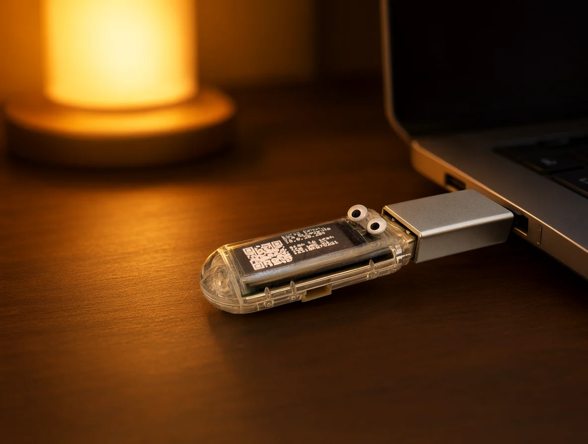
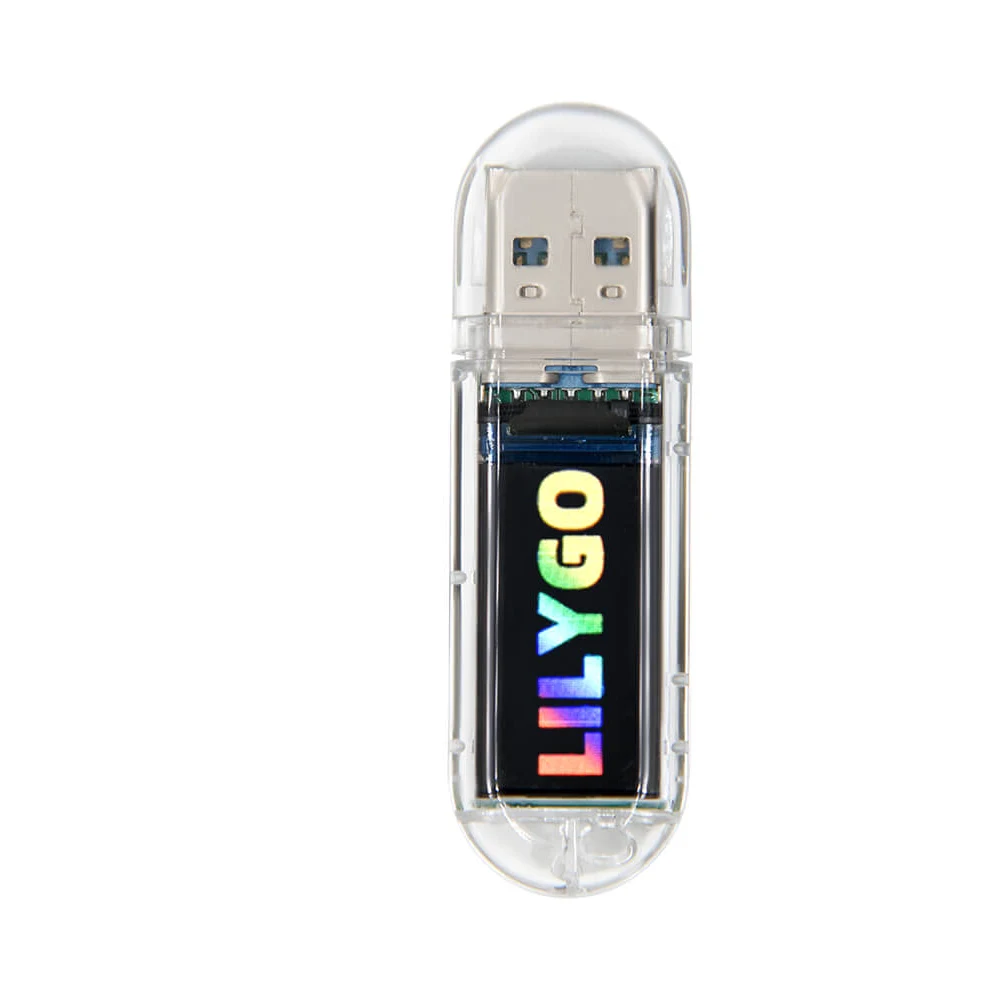

The keyboard is gone.
The laptop's keyboard died, or the desktop is under a desk. Plug in the dongle and type from the phone in your hand.
ESP32-S3 · USB-A DONGLE · WiFi
Keebling is a USB dongle with two googly eyes and a keyboard inside. Plug it in and it becomes a keyboard, mouse, and macro deck you drive from any browser. Nothing to install on the machine you're fixing — it works at the login screen, in the BIOS, and on the computer whose keyboard just died.
macOS · Linux · Windows · BIOS · recovery consoles


The mascot
The host sees a normal USB keyboard. The thing in the port is the actual T-Dongle-S3: a clear shell, a USB-A plug, and a 0.96-inch LCD. A keebling is what you call a baby keyboard when it hasn't grown into a full desk yet — so it borrows a dongle's body, sticks two googly eyes on top, and gets to work.
It peeks out of the port and waits for a page to load. It has no opinions about the operating system.
No agent, no daemon, no tray icon. The host only ever sees a keyboard and a mouse.
It types into the BIOS, the login screen, and the recovery console — the places software can't reach.
How it works
The dongle does the pretending. The browser does the talking. The host never knows there is a network in the middle.
The touchpad, keyboard, and deck. One page, no app store.
Join its access point, or put it on your own network. WebSocket from there.
A 12-character code pairs the page. The firmware translates input.
A composite HID device over USB-A — with a USB-C adapter when the host needs one.
It sees a keyboard. It does not see the phone, the WiFi, or the deck.
The deck
A grid of buttons you press. Sequences, chords, whole pages of them. Put a whole login in one tile, or a {REPEAT:5} volume ramp that runs while your finger is down.
The deck lives in the browser, not on the device. That means megabytes of room for it — and that it belongs to the phone you set it up on.
Built for the bad days
Remote desktop needs an OS, a network, and permission. Keebling needs a USB port.
The laptop's keyboard died, or the desktop is under a desk. Plug in the dongle and type from the phone in your hand.
BIOS, UEFI, recovery, a fresh install, a LUKS prompt. The places where remote desktop has never been.
A locked-down machine, a friend's laptop, a rack you don't own. The host sees a keyboard, because it is one.
The build
A LILYGO T-Dongle-S3 does the work: native USB OTG, WiFi, a 160×80 LCD, and one button. The firmware is ESP-IDF. The UI is a bundle the device serves itself.
USB-C-only laptop? A USB-C-to-USB-A adapter is the only accessory.